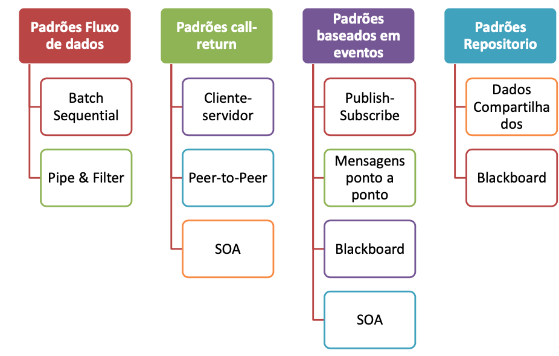
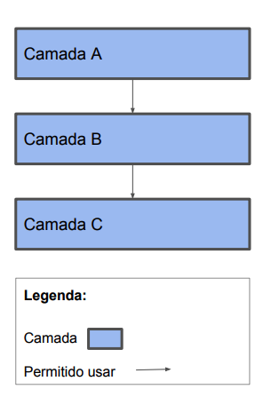
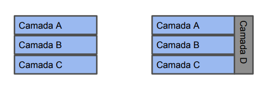
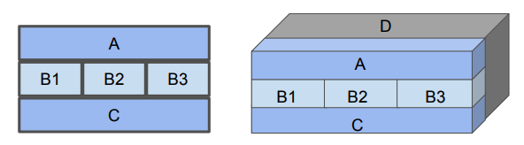
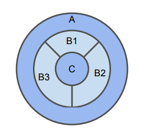
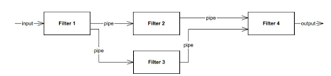
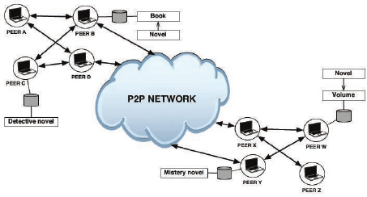
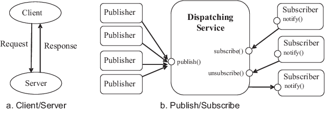

name: inverse class: center, middle, main-title # Padrões Arquiteturais Laboratório de Programação --- # Definição > Estrutura de componentes de um programa/sistema, os relacionamentos entre esses componentes, os princípios e diretrizes que governam os projetos e a evolução dos softwares. > A arquitetura estabelece restrições nas atividades futuras, e essas atividades devem produzir artefatos (código ou projeto mais detalhados) conforme à arquitetura. --- # O que é? - Um padrão arquitetural é um conjunto de decisões de projeto de software que define: - `Utilidade` - tipos de `elementos` (componentes, serviços, módulos), - tipos de `relações` (dependência, colaboração, controle), - `propriedades` dos elementos (responsabilidades, funcionalidades), e - `restrições` sobre como os elementos se relacionam (comunicação unidirecional, bidirecional) .footnote[.black.bold[*]Aula 9 - Padrões Arquiteturais - SSC0620/SSC5764 - Engenharia de Software - Profa. Dra. Elisa Yumi Nakagawa e Prof. Dra. Lina Garcés ] --- #Importância - Comunicação entre stakeholders - Abstração comum de um sistema que a maioria (ou todos) os stakeholders podem utilizar como base para o entendimento, negociação, consenso, e comunicação. - Abstração transferível do sistema > A arquitetura de software constitui um modelo relativamente pequeno e compreensível, de como o sistema é estruturado e como seus elementos trabalham juntos. --- #Padrões arquiteturais - `Padrões de Módulo`: apresenta a arquitetura em termos de módulos - `Padrões Componente & Conectores`: mostra a arquitetura em termos de componentes e conectores; - Possibilitam estruturar o software como um conjunto de elementos com comportamentos e interações em tempo de execução. - `Padrões de Alocação`: mostra a arquitetura como uma combinação de elementos de software e elementos que não são de software (e.g., servers, networks, etc) .footnote[.black.bold[*]Len Bass, David Garlan, Felix Bachmann, James Ivers, Judith Stafford, Paul Clements, and Paulo Merson. 2010. Documenting Software Architectures: Views and Beyond (2nd ed.). Addison-Wesley Professional. ] --- ##Padrões Arquiteturais tipo Componente & Conector <center>  </center> .footnote[.black.bold[*]Len Bass, David Garlan, Felix Bachmann, James Ivers, Judith Stafford, Paul Clements, and Paulo Merson. 2010. Documenting Software Architectures: Views and Beyond (2nd ed.). Addison-Wesley Professional.] --- #Exemplo: Camadas - Agrupar entidades de software (módulos, componentes) em camadas de funcionalidades e permitir seu uso entre elas. - Cada elemento de software é alocado em UMA camada. - Para usar este padrão devem ser definidas pelo menos DUAS camadas. - Camada C não pode usar camada A <center>  </center> --- #Exemplo: Camadas <center>    </center> --- #Exemplo: Pipes e Filtros <center>  </center> - Vários passos de processamento sequencial - Componentes aqui são chamados de `filtros` - cada filtro possui um conjunto de entradas e saídas - Conectores são chamados de `pipes` - Semelhante a um fluxograma - Conhecimento em streamer - Pipeline --- #Exemplo: Cliente Servidor - Permite que dois componentes interajam através de solicitações Request/Reply - Facilita modificações e reuso dos componentes, melhora a escalabilidade, disponibilidade (réplicas de servidores), segurança - Componentes podem ser alocados em camadas <center> <img src="client_server.jpg" width="250"> </center> --- #Exemplo: Peer-to-Peer - Componentes interagem diretamente com pares (peers), intercambiando serviços - Fornecer alta disponibilidade, escalabilidade. - Cada peer deve implementar toda a lógica de servidor. - É necessário que um peer tenha o perfil de roteador para conectar novos peers. <center>  </center> --- ##Exemplo: Service-Oriented Architecture (SOA) - Coleção de componentes distribuídos que fornecem/consomem serviços - Favorece a interoperabilidade de componentes distribuídos executados em diferentes plataformas na internet - Serviços consomem e fornecem funcionalidades através de solicitações enviadas usando conectores SOAP, REST, RESTFUL, etc. - Serviços são conectados somente através de intermediários (ESB) que servem como hub. --- ##Exemplo: Service-Oriented Architecture (SOA) <center> <img src="soa.png" width="700"> </center> --- #Exemplo: Publish-Subscribe - Componentes interagem através de eventos de interesse (tópicos) aos quais foram subscritos - Enviar eventos diretamente a componentes interessados sem precisar estabelecer uma comunicação direta. - Muito comum em redes sociais <center>  </center> --- #Exemplo: Microserviços - Conjunto de serviços - rodando em seu próprio processo - normalmente sobre algo bem leve - requisitado via HTTP API - implantado independentemente - construído ao redor das funcionalidades > Leia: <a href="https://www.martinfowler.com/articles/microservices.html">Microservices a definition of this new architectural term</a> --- #Exemplo: Microserviços <center> <img src="micro.png"> </center> --- #Qual escolher? - Dificilmente será apenas 1 - podem ser facilmente combinados > Dependendo dos requisitos de qualidade da arquitetura, é necessário analisar quais padrões são os mais favoráveis --- #Alguns requisitos que devem ser levados em conta: - Desempenho - Modularidade + Interoperabilidade + Portabilidade - Flexibilidade - Escalabilidade - Disponibilidade - Segurança - Manutenção - Confiabilidade